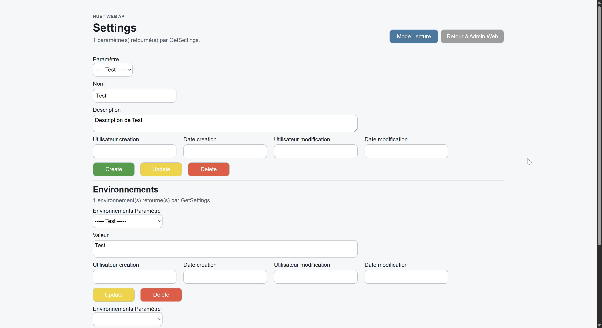
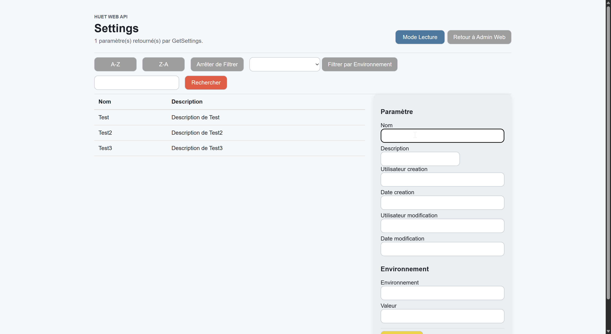

Contexte Général & Besoins Métiers
Au cours de mon stage de fin d'année au sein du service de développement informatique de l'entreprise Huet / JH Industries (acteur majeur spécialisé dans la menuiserie industrielle et les ouvertures), j'ai été affecté à la conception autonome et à l'évolution d'une solution applicative complète d'administration. Le système d'information interne de l'entreprise requiert la manipulation quotidienne de volumineux objets métiers, de configurations globales et des environnements applicatifs associés (recette, test, production).
L'enjeu de cette réalisation consistait à bâtir un système d'architecture n-tiers robuste, offrant aux gestionnaires la capacité d'exécuter de manière sécurisée l'ensemble des opérations CRUD (Create, Read, Update, Delete). L'application finale devait impérativement éradiquer les risques d'anomalies de saisie manuelle et les désynchronisations de flux entre les interfaces clientes et les bases de données de production.
Stratégie et Processus d'Apprentissage d'Angular
L'un des défis majeurs de cette mission résidait dans l'obligation d'utiliser le framework Angular et le langage TypeScript, deux technologies qui m'étaient totalement inconnues à mon arrivée. N'ayant manipulé que des structures plus traditionnelles en formation, j'ai dû mettre en place une méthodologie d'auto-formation intensive dès les premiers jours du projet.
Mon processus d'apprentissage s'est articulé autour de trois axes complémentaires :
- Assimilation conceptuelle : Étude approfondie de la documentation officielle d'Angular pour comprendre la philosophie des composants standalone, le cycle de vie d'un composant (notamment le hook
ngOnInit), la gestion des modules réutilisables et le mécanisme de routage. - Prise en main de TypeScript : Apprentissage du typage statique, de la manipulation avancée des objets et de la programmation asynchrone (gestion des flux avec RxJS, utilisation des observables et des promesses).
- Pratique par micro-projets : Développement préalable de petites interfaces isolées (formulaires simples, liaisons de données bidirectionnelles ou two-way data binding) avant d'attaquer directement le code source lié au cœur de l'infrastructure de JH Industries.
Environnement riche et très complexe
En fin de première semaine, j'ai été confronté à une situation de blocage. Vouloir mener de front la conception de la base de données, la configuration d'une API C# lourde et la construction de l'interface Angular s'est traduit par des difficultés. Ma compréhension de chacunes des couches techniques étant à ce moment là très partielle, le début de ce nouveau projet s'est avéré très compliqué. L'utilisation d'Angular était notamment le point le plus bloquant, n'ayant quasiment aucune expérience sur l'utilisation de se Framework. De plus, j'ai voulu m'appuyer sur un projet web déjà existant mais celui-ci était trop complexe inutilement comme me l'ont dit les autres développeurs.
Réajustements (Semaine 2)
Loin de baisser les bras, j'ai pris le temps de discuter avec mon tuteur de manière à être un peu plus aiguillé sur le début. Ainsi, A l'issue de cette première semaine peu fructueuse sur ce nouveau projet, mon tuteur de stage à recréé un projet en laissant quelques méthodes utiles concernant la connexion à l'API et la récupération des données. En repartant de ça j'ai pu me lancer de manière efficace dans le projet. Toutefois, j'ai tout de même rencontré des difficultés au niveau de la liaison de certaines couche techniques en raisons de la complexité de celle-ci. Néanmoins, en prenant le temps de rechercher par moi-même de manière rigoureuse, j'ai réussi à régler mes problèmes de manière autonome au fur et à mesure.
Modélisation SQL Server et Architecture Back-End C#
Une fois la méthodologie stabilisée, j'ai orchestré la couche de persistance des données en rédigeant les scripts relationnels sous Oracle. J'ai veillé scrupuleusement au respect des normes de l'entreprise (conventions de nommage, types de données uniformisés, commentaire de colonnes et de tables) et documenté chaque table avant son déploiement sur l'environnement de test.
Pour exposer ces données, j'ai travaillé sous Visual Studio pour faire évoluer le Framework interne en C#. J'ai codé les modèles de données représentant nos entités SQL, puis j'ai compilé et régénéré les fichiers de liaison dynamiques (les bibliothèques .dll). Cette étape m'a permis de déployer une instance locale de l'API d'entreprise sur mon poste afin de tester et de valider les premiers endpoints destinés à alimenter le site web. De plus, j'ai également du rajouter des méthodes dans l'API, pour la nouvelle table que j'ai créé mais également pour une autre table déjà existante, cette dernière étant également nécessaire au fonctionnement de mon application web.
Résolution des Problèmes Logiques et Désynchronisations
Au cours de la troisième semaine, lors de l'intégration de la gestion des environnements dépendants des paramètres, de nouvelles difficultés techniques majeures sont apparues. Côté client, l'interface graphique souffrait de latences et de désynchronisations : les listes déroulantes (dropdowns) ne reflétaient pas l'état réel des données renvoyées par l'API, et les contrôles de type input refusaient de se mettre à jour en raison d'un mauvais déclenchement d'événements.
Pour résoudre ces anomalies, j'ai mené les actions suivantes :
- Restructuration des services Angular : Réécriture des mécanismes d'abonnement (subscribes) pour forcer le rafraîchissement des composants dès la validation d'une modification. De cette manière, les valeurs saisies automatiquement par l'application qui n'étaient pas détectées par le navigateur sont désormais bel et bien prises en compte.
- Correction d'une faille logique en Base de Données : J'ai identifié que la suppression d'un paramètre parent laissait des lignes "orphelines" d'environnements en base, violant les contraintes d'intégrité. J'ai restructuré les requêtes de l'API pour implémenter une suppression en cascade propre et sécurisée.
- Robustesse des formulaires : Implémentation de blocs
try/catchsystématiques côté API pour intercepter les anomalies de requêtes et déploiement de contrôles de saisie rigoureux côté client pour rejeter les formats invalides. Avant cette modification, le contrôle de saisie était effectué via l'API, ce qui n'était pas le comportement attendu et empêchait une potentielle réutilisation de ces méthodes API dans des contextes différents.

Aperçu de l'éditeur de paramètres et d'environnements
Optimisations Algorithmiques en TypeScript
Afin de garantir un confort d'utilisation optimal face à des listes contenant des centaines de lignes de paramètres, j'ai implémenté des solutions algorithmiques avancées en TypeScript en semaine 4 :
- Tri dynamique en mémoire : Utilisation des fonctions natives
.sort()et.reverse()pour classer instantanément les tableaux d'objets par ordre alphabétique croissant ou décroissant sans solliciter à nouveau le serveur. - Parallélisation des flux asynchrones : Remplacement des appels HTTP successifs par la structure
Promise.all, permettant de lancer simultanément les requêtes d'alimentation de l'écran et de diviser par deux le temps de chargement perçu. - Conception du "Mode Lecture" : Développement d'une couche d'affichage protectrice permettant de consulter les données à l'écran sans risque de modification ou de suppression accidentelle par inadvertance.

Aperçu de l'éditeur de paramètres et d'environnements
Centralisation sur le Portail et Verrouillage de la Sécurité
La dernière semaine a concrétisé le projet par une phase de refactoring. Après une revue de code rigoureuse menée avec mon maître de stage, j'ai épuré le projet en factorisant tous les blocs de code redondants dans des services transversaux. J'ai ensuite intégré l'application finale dans un "Lanceur d'Applications d'Administration Web" que je devais développé moi-même dans l'optique de pouvoir centraliser l'accès aux éventuels et futurs applications web de l'entreprise.
La sécurité des données stratégiques de l'entreprise a été verrouillée à double tour :
- Sécurité applicative (Front-End) : Configuration de
Angular Guardsrattachés au routeur, analysant les profils utilisateurs pour bloquer instantanément toute tentative d'accès à une URL d'administration non autorisée. - Sécurité des données (Back-End) : Injection de contrôles par
Headers HTTPau niveau de l'API C# pour rejeter les requêtes non authentifiées à la source, complétée par le masquage des traces de pile d'exécution (stacktraces) en cas d'erreur.
Optimisations Finales
Dans mes tests finaux pour vérifier le bon fonctionnement de l'application, je me suis rendu compte que quelques bugs et comportement innatendus s'était immiscés dans mon code. Malgré le temps limité dont je disposais, j'ai réussi à régler tous les problèmes majeurs qu'il restait avant la présentation finale à mon maître de stage.
Parmis ces problèmes, il y en avait deux principaux qui perturbaient le fonctionnement de mon application web :
- Lenteur de Chargement des Paramètres Triés :L'ajout de headers dans les entêtes nécessitait l'interception des requêtes pour l'injection des headers. Puisque toutes les requêtes étaient interceptés, le temps de traitement de la recherche a également augmenté. Pour remédier à celà, j'ai modifier le fonctionnement de mes appels API de manières à n'en faire qu'un seul. De cette manière, le temps de traitement des données est devenu quasiment instantané, gagnant en rapidité par rapport à ma solution initiale.
- Disfonctionnement de la Recherche de Tri par EnvironnementLa modification du fonctionnement de la recherche par environnement à complètement cassé la recherche par environnement car les objets lu pour l'affichage des données n'étaient plus les bons. J'ai donc créer une nouvelle méthode permettant de récupérer les bons objets, récupérant ainsi un affichage fonctionnel.
Bilan du Projet et Validation Finale
Le stage s'est achevé le vendredi par une démonstration en direct de la solution devant l'ensemble des développeurs du service. Les retours ont validé la vélocité de l'interface et l'efficacité des filtres algorithmiques mis en place.
Cette réalisation atteste de la validation de nombreuses compétences du Bloc 1 du référentiel BTS SIO SLAM. Elle prouve ma capacité à gérer le patrimoine informatique d'une structure d'envergure, à surmonter les obstacles techniques par une auto-formation efficace, à collaborer au sein d'une équipe de développement et à faire évoluer durablement une solution applicative d'entreprise.
Infos Clés
- Entreprise : Huet / JH Industries
- Type : Application Web & API
- Back-End : C# / API Web / SQL
- Front-End : Angular / TypeScript
- Sécurité : Guards, Headers HTTP
- Compétences : Organiser son développement professionnel (Bloc 1) Gérer le patrimoine informatique (Bloc 1)